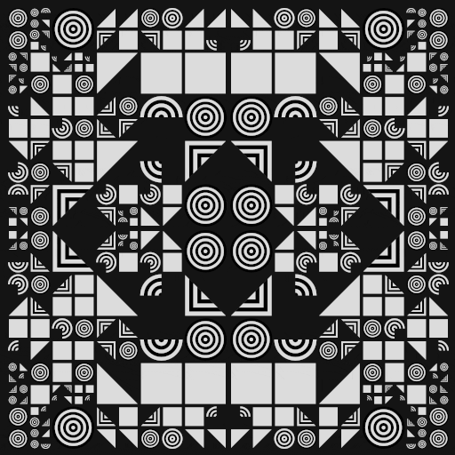
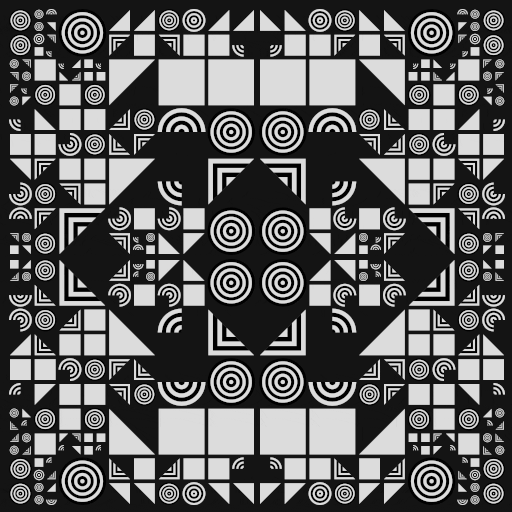

LGBT Acceptance Across the World
Data Visualisation, d3.js
A data visualisation of LGBT Acceptance Indices of 174 countries.
Lost Frequencies
Creative Coding, Computer Vision
An interactive web-based program representing a speculative reality, exploring the sound-color relationship in relation to computer vision.
How close are NYC subway entrances to stations?
Data Visualisation, Mapbox GL JS
An interactive geospatial visualisation of subway entrances in relation to the stations in New York City.
Markov Chain Bot
Creative Coding, Language Processing
A command line C++ application generating text based on input files utilising Markov Chains of n-th order.
Lucid - Sleep Regulation App
UX/UI Design and Research
Maintain a regular and healthy sleeping pattern while tracking your data.
Fictional Political Party Website
Web development, HTML/CSS/JavaScript
Developing a website for a fictinal political party The Party from Geroge Orwell's novel 1984.
Platformer Game
p5.js, Creative Coding
Using p5.js to develop a simple 2D platformer game.
Queer Alphabet
Graphic Design, Editorial
An educational-creative publication of LGBTQIA+ terminology.
Photography
Photography
A collection of my selected photographic works.
 
